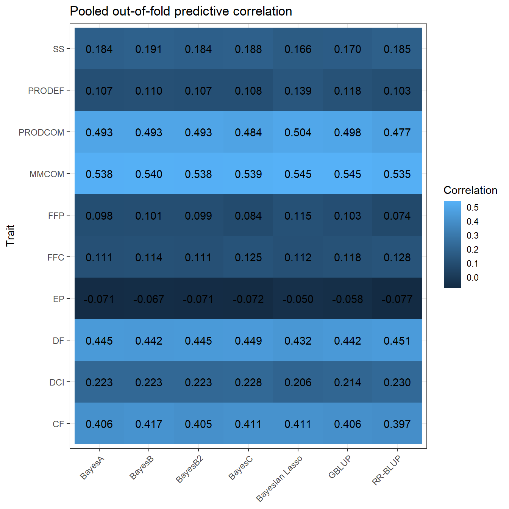
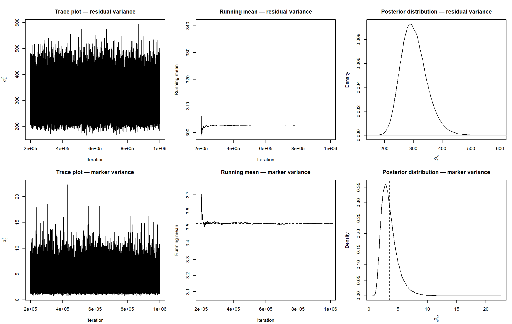

Last updated: 2026-08-10
Checks: 7 0
Knit directory:
Bayesian-ridge-regression-papaya/
This reproducible R Markdown analysis was created with workflowr (version 1.7.2). The Checks tab describes the reproducibility checks that were applied when the results were created. The Past versions tab lists the development history.
Great! Since the R Markdown file has been committed to the Git repository, you know the exact version of the code that produced these results.
Great job! The global environment was empty. Objects defined in the global environment can affect the analysis in your R Markdown file in unknown ways. For reproduciblity it’s best to always run the code in an empty environment.
The command set.seed(20260717) was run prior to running
the code in the R Markdown file. Setting a seed ensures that any results
that rely on randomness, e.g. subsampling or permutations, are
reproducible.
Great job! Recording the operating system, R version, and package versions is critical for reproducibility.
Nice! There were no cached chunks for this analysis, so you can be confident that you successfully produced the results during this run.
Great job! Using relative paths to the files within your workflowr project makes it easier to run your code on other machines.
Great! You are using Git for version control. Tracking code development and connecting the code version to the results is critical for reproducibility.
The results in this page were generated with repository version b54ac21. See the Past versions tab to see a history of the changes made to the R Markdown and HTML files.
Note that you need to be careful to ensure that all relevant files for
the analysis have been committed to Git prior to generating the results
(you can use wflow_publish or
wflow_git_commit). workflowr only checks the R Markdown
file, but you know if there are other scripts or data files that it
depends on. Below is the status of the Git repository when the results
were generated:
Ignored files:
Ignored: .Rproj.user/
Ignored: .github/
Ignored: code/
Ignored: data/Bayesiana goiaba Eileen SReport.pdf
Ignored: output/matrices/
Ignored: output/models/full/bglr_runs/
Ignored: output/models/full/runs/
Ignored: output/models/full/temporary/
Ignored: output/preprocessing/
Ignored: renv/library/
Ignored: renv/staging/
Note that any generated files, e.g. HTML, png, CSS, etc., are not included in this status report because it is ok for generated content to have uncommitted changes.
These are the previous versions of the repository in which changes were
made to the R Markdown (analysis/03_models_en.Rmd) and HTML
(docs/03_models_en.html) files. If you’ve configured a
remote Git repository (see ?wflow_git_remote), click on the
hyperlinks in the table below to view the files as they were in that
past version.
| File | Version | Author | Date | Message |
|---|---|---|---|---|
| Rmd | b54ac21 | WevertonGomesCosta | 2026-08-08 | fix: preserve native BGLR model outputs |
| html | 04ec56f | WevertonGomesCosta | 2026-08-07 | docs: publish representative MCMC diagnostics |
| Rmd | 21a19f0 | WevertonGomesCosta | 2026-08-07 | fix: restore module 03 section boundary |
| Rmd | 37c5e9e | WevertonGomesCosta | 2026-08-07 | feat: add representative MCMC posterior diagnostics |
| html | 1764c63 | WevertonGomesCosta | 2026-08-07 | docs: publish complete module 03 model analysis |
| Rmd | 01f9a15 | WevertonGomesCosta | 2026-08-05 | feat: expand BGLR models to complete cross-validation |
| html | 4376ad6 | WevertonGomesCosta | 2026-08-05 | docs: publish seven-method BGLR pilot |
| Rmd | 775643a | WevertonGomesCosta | 2026-08-05 | feat: add seven-method BGLR pilot |
| Rmd | c54495b | WevertonGomesCosta | 2026-07-23 | refactor: simplify workflowr tutorial structure |
This module performs the complete cross-validated fitting of seven genomic prediction methods for ten papaya traits. The same five deterministic, family-stratified folds are used for every method and trait.
The complete analysis contains:
\[ 10\ \text{traits} \times 5\ \text{folds} \times 7\ \text{methods} = 350\ \text{fits}. \]
All methods are fitted exclusively with BGLR (Pérez and Campos 2014):
BRR component and
the complete marker matrix M;M;M;M and a zero-effect probability
operationally fixed near \(10^{-5}\);M;M;G and the
BGLR RKHS component.RR-BLUP and Bayesian ridge regression are not treated as separate
methods. The Gaussian marker-effect model implemented by
model = "BRR" is the RR-BLUP implementation used in this
project.
The matrices constructed in Module 02 are used without fold-specific reconstruction:
X contains intercept, block, and family effects;M contains the 72 centered allele-dosage columns;G contains the additive genomic relationships;BGLR includes an intercept by default. Therefore, the intercept
column is removed from X before the block and family
columns are passed through the FIXED component.
For each trait and fold, only a copy of the phenotype vector is
changed. The 30 validation observations are replaced by NA;
X, M, and G remain global and
unchanged.
The MCMC settings follow the main methods section of the reference article (Silva et al. 2021):
The BGLR default prior allocation parameter is made explicit with
R2 = 0.5.
Each trait-fold-method combination has:
The compact RDS remains the checkpoint that determines whether a statistical fit is missing during an ordinary rebuild. Completed checkpoints are skipped, so the model, seed, matrices, and cross-validation contract are not changed by this storage revision.
The native BGLR files are now preserved under
output/models/full/bglr_runs/Trait/Fold/Method/. They
retain all files written by the current BGLR specification, including
the thinned burn-in and posterior samples. The same files are read for
the convergence diagnostics, but they are no longer deleted after the
compact checkpoint is created. Historical native files that were deleted
by earlier versions of the pipeline are reconstructed separately by
deterministic replay and are accepted only after exact comparison with
the corresponding official checkpoint.
suppressPackageStartupMessages({
library(BGLR)
library(coda)
library(digest)
library(dplyr)
library(ggplot2)
library(knitr)
library(here)
})MATRICES_FILE <- here(
"output",
"matrices",
"matrices_object.rds"
)
OUTPUT_DIR <- here(
"output",
"models",
"full"
)
RUNS_DIR <- file.path(
OUTPUT_DIR,
"runs"
)
BGLR_RUNS_DIR <- file.path(
OUTPUT_DIR,
"bglr_runs"
)
N_ITER <- 1000000L
BURN_IN <- 200000L
THIN <- 4L
R2_PRIOR <- 0.5
RAW_SAVED_SAMPLES <- floor(
N_ITER / THIN
)
BURN_IN_SAVED_SAMPLES <- floor(
BURN_IN / THIN
)
RETAINED_SAMPLES <-
RAW_SAVED_SAMPLES -
BURN_IN_SAVED_SAMPLES
PIPELINE_VERSION <-
"module03-full-v3"
MAX_NEW_RUNS_PER_BUILD <- as.integer(
Sys.getenv(
"PAPAYA_MAX_NEW_RUNS",
unset = "350"
)
)
SEED_BASE <- 202608050L
BAYESB2_ZERO_PROBABILITY <- 1e-5
BAYESB2_PROB_IN <-
1 - BAYESB2_ZERO_PROBABILITY
BAYESB2_COUNTS <- 1e6
ESS_REVIEW_THRESHOLD <- 1000
GEWEKE_REVIEW_THRESHOLD <- 2
dir.create(
RUNS_DIR,
recursive = TRUE,
showWarnings = FALSE
)
dir.create(
BGLR_RUNS_DIR,
recursive = TRUE,
showWarnings = FALSE
)matrices_object <- readRDS(
MATRICES_FILE
)
ids <- matrices_object$ids
metadata <- matrices_object$metadata
phenotypes <- matrices_object$phenotypes
trait_dictionary <- matrices_object$trait_dictionary
X <- matrices_object$X
M <- matrices_object$M
G <- matrices_object$G
cv_folds <- matrices_object$cv_folds
traits <- colnames(
phenotypes
)
X_fixed <- X[
,
colnames(X) != "(Intercept)",
drop = FALSE
]
method_names <- c(
"RRBLUP",
"BayesA",
"BayesB",
"BayesB2",
"BayesC",
"BL",
"GBLUP"
)
method_labels <- c(
RRBLUP = "RR-BLUP",
BayesA = "BayesA",
BayesB = "BayesB",
BayesB2 = "BayesB2",
BayesC = "BayesC",
BL = "Bayesian Lasso",
GBLUP = "GBLUP"
)input_audit <- data.frame(
Check = c(
"Individuals",
"Traits",
"Folds",
"Methods",
"Planned fits",
"Validation individuals per fold",
"Training individuals per fold",
"Fixed-effect columns supplied to BGLR",
"Marker columns",
"Rank of M",
"Rows and columns of G",
"Rank of G",
"X row names aligned with IDs",
"M row names aligned with IDs",
"G row names aligned with IDs",
"G column names aligned with IDs"
),
Value = c(
length(ids),
length(traits),
matrices_object$settings$n_folds,
length(method_names),
length(traits) *
matrices_object$settings$n_folds *
length(method_names),
unique(
matrices_object$fold_summary$
Validation_n
),
unique(
matrices_object$fold_summary$
Training_n
),
ncol(X_fixed),
ncol(M),
qr(M)$rank,
paste(dim(G), collapse = " x "),
qr(G)$rank,
identical(rownames(X), ids),
identical(rownames(M), ids),
identical(rownames(G), ids),
identical(colnames(G), ids)
)
)
kable(
input_audit,
caption = "Invariant input audit for the complete model fitting"
)| Check | Value |
|---|---|
| Individuals | 150 |
| Traits | 10 |
| Folds | 5 |
| Methods | 7 |
| Planned fits | 350 |
| Validation individuals per fold | 30 |
| Training individuals per fold | 120 |
| Fixed-effect columns supplied to BGLR | 18 |
| Marker columns | 72 |
| Rank of M | 38 |
| Rows and columns of G | 150 x 150 |
| Rank of G | 38 |
| X row names aligned with IDs | TRUE |
| M row names aligned with IDs | TRUE |
| G row names aligned with IDs | TRUE |
| G column names aligned with IDs | TRUE |
model_catalogue <- data.frame(
Method = method_names,
Label = unname(
method_labels[
method_names
]
),
BGLR_component = c(
"BRR",
"BayesA",
"BayesB",
"BayesB",
"BayesC",
"BL",
"RKHS"
),
Genomic_input = c(
"M",
"M",
"M",
"M",
"M",
"M",
"G"
),
Main_assumption = c(
"Common Gaussian variance for all marker effects",
"Marker-specific scaled-t variances",
"Scaled-t slab and a point mass at zero",
"BayesB with zero-effect probability near 1e-5",
"Common Gaussian slab and a point mass at zero",
"Double-exponential marginal prior",
"Genomic values structured by G"
)
)
kable(
model_catalogue,
caption = "Seven genomic prediction methods"
)| Method | Label | BGLR_component | Genomic_input | Main_assumption |
|---|---|---|---|---|
| RRBLUP | RR-BLUP | BRR | M | Common Gaussian variance for all marker effects |
| BayesA | BayesA | BayesA | M | Marker-specific scaled-t variances |
| BayesB | BayesB | BayesB | M | Scaled-t slab and a point mass at zero |
| BayesB2 | BayesB2 | BayesB | M | BayesB with zero-effect probability near 1e-5 |
| BayesC | BayesC | BayesC | M | Common Gaussian slab and a point mass at zero |
| BL | Bayesian Lasso | BL | M | Double-exponential marginal prior |
| GBLUP | GBLUP | RKHS | G | Genomic values structured by G |
ETA_models <- list(
RRBLUP = list(
fixed = list(
X = X_fixed,
model = "FIXED"
),
genomic = list(
X = M,
model = "BRR"
)
),
BayesA = list(
fixed = list(
X = X_fixed,
model = "FIXED"
),
genomic = list(
X = M,
model = "BayesA"
)
),
BayesB = list(
fixed = list(
X = X_fixed,
model = "FIXED"
),
genomic = list(
X = M,
model = "BayesB"
)
),
BayesB2 = list(
fixed = list(
X = X_fixed,
model = "FIXED"
),
genomic = list(
X = M,
model = "BayesB",
probIn = BAYESB2_PROB_IN,
counts = BAYESB2_COUNTS
)
),
BayesC = list(
fixed = list(
X = X_fixed,
model = "FIXED"
),
genomic = list(
X = M,
model = "BayesC"
)
),
BL = list(
fixed = list(
X = X_fixed,
model = "FIXED"
),
genomic = list(
X = M,
model = "BL"
)
),
GBLUP = list(
fixed = list(
X = X_fixed,
model = "FIXED"
),
genomic = list(
K = G,
model = "RKHS"
)
)
)The official BGLR implementation writes a residual-variance chain for every model. The genomic scalar used for convergence review differs by method: marker variance for RR-BLUP, scale for BayesA and BayesB, common marker variance for BayesC, shrinkage parameter for the Bayesian Lasso, and genomic variance for GBLUP.
genomic_trace_suffix <- c(
RRBLUP = "ETA_genomic_varB.dat",
BayesA = "ETA_genomic_ScaleBayesA.dat",
BayesB = "ETA_genomic_parBayesB.dat",
BayesB2 = "ETA_genomic_parBayesB.dat",
BayesC = "ETA_genomic_parBayesC.dat",
BL = "ETA_genomic_lambda.dat",
GBLUP = "ETA_genomic_varU.dat"
)
genomic_trace_header <- c(
RRBLUP = FALSE,
BayesA = FALSE,
BayesB = TRUE,
BayesB2 = TRUE,
BayesC = TRUE,
BL = FALSE,
GBLUP = FALSE
)
genomic_trace_column <- c(
RRBLUP = 1L,
BayesA = 1L,
BayesB = 2L,
BayesB2 = 2L,
BayesC = 2L,
BL = 1L,
GBLUP = 1L
)
genomic_trace_parameter <- c(
RRBLUP = "Marker_variance",
BayesA = "Scale",
BayesB = "Scale",
BayesB2 = "Scale",
BayesC = "Marker_variance",
BL = "Lambda",
GBLUP = "Genomic_variance"
)run_design <- expand.grid(
Trait = traits,
Fold = seq_len(
matrices_object$settings$n_folds
),
Method = method_names,
stringsAsFactors = FALSE
)
run_design <- run_design[
order(
match(
run_design$Trait,
traits
),
run_design$Fold,
match(
run_design$Method,
method_names
)
),
]
rownames(run_design) <- NULL
run_design$Run_number <- seq_len(
nrow(run_design)
)
run_design$Seed <-
SEED_BASE +
run_design$Run_number
analysis_settings <- list(
pipeline_version =
PIPELINE_VERSION,
n_iter = N_ITER,
burn_in = BURN_IN,
thin = THIN,
R2 = R2_PRIOR,
seed_base = SEED_BASE,
bayesb2_zero_probability =
BAYESB2_ZERO_PROBABILITY,
bayesb2_prob_in =
BAYESB2_PROB_IN,
bayesb2_counts =
BAYESB2_COUNTS,
traits = traits,
folds = seq_len(
matrices_object$settings$n_folds
),
methods = method_names
)
analysis_signature <- substr(
digest::digest(
list(
ids = ids,
phenotypes = phenotypes,
X = X,
M = M,
G = G,
cv_folds = cv_folds,
settings = analysis_settings
),
algo = "sha256"
),
1,
16
)
run_design$Signature <-
analysis_signature
run_design$Run_id <- paste(
run_design$Trait,
paste0(
"F",
run_design$Fold
),
run_design$Method,
sep = "_"
)
run_design$Result_relative_file <- file.path(
"output",
"models",
"full",
"runs",
paste0(
run_design$Run_id,
"_",
analysis_signature,
".rds"
)
)
result_files <- file.path(
here(),
run_design$Result_relative_file
)
run_design$Completed_before_build <-
file.exists(
result_files
)
write.csv(
run_design,
file.path(
OUTPUT_DIR,
"run_design.csv"
),
row.names = FALSE
)
kable(
head(
run_design,
14
),
caption = paste(
"First fourteen planned runs; analytical signature",
analysis_signature
)
)| Trait | Fold | Method | Run_number | Seed | Signature | Run_id | Result_relative_file | Completed_before_build |
|---|---|---|---|---|---|---|---|---|
| MMCOM | 1 | RRBLUP | 1 | 202608051 | cfa762f05ddd067e | MMCOM_F1_RRBLUP | output/models/full/runs/MMCOM_F1_RRBLUP_cfa762f05ddd067e.rds | TRUE |
| MMCOM | 1 | BayesA | 2 | 202608052 | cfa762f05ddd067e | MMCOM_F1_BayesA | output/models/full/runs/MMCOM_F1_BayesA_cfa762f05ddd067e.rds | TRUE |
| MMCOM | 1 | BayesB | 3 | 202608053 | cfa762f05ddd067e | MMCOM_F1_BayesB | output/models/full/runs/MMCOM_F1_BayesB_cfa762f05ddd067e.rds | TRUE |
| MMCOM | 1 | BayesB2 | 4 | 202608054 | cfa762f05ddd067e | MMCOM_F1_BayesB2 | output/models/full/runs/MMCOM_F1_BayesB2_cfa762f05ddd067e.rds | TRUE |
| MMCOM | 1 | BayesC | 5 | 202608055 | cfa762f05ddd067e | MMCOM_F1_BayesC | output/models/full/runs/MMCOM_F1_BayesC_cfa762f05ddd067e.rds | TRUE |
| MMCOM | 1 | BL | 6 | 202608056 | cfa762f05ddd067e | MMCOM_F1_BL | output/models/full/runs/MMCOM_F1_BL_cfa762f05ddd067e.rds | TRUE |
| MMCOM | 1 | GBLUP | 7 | 202608057 | cfa762f05ddd067e | MMCOM_F1_GBLUP | output/models/full/runs/MMCOM_F1_GBLUP_cfa762f05ddd067e.rds | TRUE |
| MMCOM | 2 | RRBLUP | 8 | 202608058 | cfa762f05ddd067e | MMCOM_F2_RRBLUP | output/models/full/runs/MMCOM_F2_RRBLUP_cfa762f05ddd067e.rds | TRUE |
| MMCOM | 2 | BayesA | 9 | 202608059 | cfa762f05ddd067e | MMCOM_F2_BayesA | output/models/full/runs/MMCOM_F2_BayesA_cfa762f05ddd067e.rds | TRUE |
| MMCOM | 2 | BayesB | 10 | 202608060 | cfa762f05ddd067e | MMCOM_F2_BayesB | output/models/full/runs/MMCOM_F2_BayesB_cfa762f05ddd067e.rds | TRUE |
| MMCOM | 2 | BayesB2 | 11 | 202608061 | cfa762f05ddd067e | MMCOM_F2_BayesB2 | output/models/full/runs/MMCOM_F2_BayesB2_cfa762f05ddd067e.rds | TRUE |
| MMCOM | 2 | BayesC | 12 | 202608062 | cfa762f05ddd067e | MMCOM_F2_BayesC | output/models/full/runs/MMCOM_F2_BayesC_cfa762f05ddd067e.rds | TRUE |
| MMCOM | 2 | BL | 13 | 202608063 | cfa762f05ddd067e | MMCOM_F2_BL | output/models/full/runs/MMCOM_F2_BL_cfa762f05ddd067e.rds | TRUE |
| MMCOM | 2 | GBLUP | 14 | 202608064 | cfa762f05ddd067e | MMCOM_F2_GBLUP | output/models/full/runs/MMCOM_F2_GBLUP_cfa762f05ddd067e.rds | TRUE |
The loop below fits only runs whose compact result file is absent. A
completed run is never recomputed by an ordinary rebuild of this module.
The optional PAPAYA_MAX_NEW_RUNS environment variable
limits how many new fits are performed in one build. Its default value
is 350, so an ordinary build fits all remaining runs. Setting it to 7
validates one complete trait-fold block containing all methods before
the remaining analysis is launched.
The native BGLR files are preserved permanently for every new fit. For the single-chain diagnostics used in this module, two of those saved chains are read directly:
For each chain, effective sample size and the Geweke diagnostic are
calculated with coda. The thresholds below are review flags
rather than automatic model exclusion rules:
pending_indices <- head(
which(
!file.exists(
result_files
)
),
n = MAX_NEW_RUNS_PER_BUILD
)
for (run_index in pending_indices) {
trait_name <-
run_design$Trait[
run_index
]
fold_number <-
run_design$Fold[
run_index
]
method_name <-
run_design$Method[
run_index
]
run_id <-
run_design$Run_id[
run_index
]
run_seed <-
run_design$Seed[
run_index
]
result_file <-
result_files[
run_index
]
temporary_result_file <- paste0(
result_file,
".tmp"
)
bglr_run_dir <- file.path(
BGLR_RUNS_DIR,
trait_name,
paste0(
"F",
fold_number
),
method_name
)
dir.create(
bglr_run_dir,
recursive = TRUE,
showWarnings = FALSE
)
save_prefix <- file.path(
bglr_run_dir,
"bglr_"
)
unlink(
Sys.glob(
paste0(
save_prefix,
"*"
)
)
)
y_observed <- phenotypes[
,
trait_name
]
names(y_observed) <- ids
validation_index <- which(
cv_folds$Fold == fold_number
)
training_index <- which(
cv_folds$Fold != fold_number
)
y_model <- y_observed
y_model[validation_index] <- NA_real_
set.seed(
run_seed
)
fit_start <- proc.time()[["elapsed"]]
fit <- BGLR::BGLR(
y = y_model,
ETA = ETA_models[[method_name]],
response_type = "gaussian",
nIter = N_ITER,
burnIn = BURN_IN,
thin = THIN,
R2 = R2_PRIOR,
saveAt = save_prefix,
verbose = FALSE,
rmExistingFiles = TRUE
)
fit_end <- proc.time()[["elapsed"]]
predicted_validation <- fit$yHat[
validation_index
]
observed_validation <- y_observed[
validation_index
]
fixed_component <- as.vector(
X_fixed %*%
fit$ETA$fixed$b
)
genomic_component <- as.vector(
fit$yHat -
fit$mu -
fixed_component
)
genomic_value_table <- data.frame(
Run_id = rep(
run_id,
length(ids)
),
Signature = rep(
analysis_signature,
length(ids)
),
IND = ids,
Trait = rep(
trait_name,
length(ids)
),
Fold = rep(
fold_number,
length(ids)
),
Method = rep(
method_name,
length(ids)
),
Genomic_value =
genomic_component
)
prediction_table <- data.frame(
Run_id = run_id,
Signature = analysis_signature,
IND = ids[
validation_index
],
Trait = trait_name,
Fold = fold_number,
Method = method_name,
Observed = observed_validation,
Predicted = predicted_validation,
Fixed_component =
fixed_component[
validation_index
],
Genomic_component =
genomic_component[
validation_index
]
)
posterior_prob_in <- c(
fit$ETA$genomic$probIn,
NA_real_
)[1]
metric_table <- data.frame(
Run_id = run_id,
Signature = analysis_signature,
Trait = trait_name,
Fold = fold_number,
Method = method_name,
Seed = run_seed,
Training_n = length(
training_index
),
Validation_n = length(
validation_index
),
Correlation = cor(
observed_validation,
predicted_validation
),
RMSE = sqrt(
mean(
(
observed_validation -
predicted_validation
)^2
)
),
MAE = mean(
abs(
observed_validation -
predicted_validation
)
),
Prediction_bias = mean(
predicted_validation -
observed_validation
),
Regression_slope =
cov(
observed_validation,
predicted_validation
) /
var(
predicted_validation
),
DIC = fit$fit$DIC,
Effective_parameters =
fit$fit$pD,
Log_likelihood_at_posterior_mean =
fit$fit$
logLikAtPostMean,
Posterior_mean =
fit$mu,
Posterior_mean_SD = c(
fit$SD.mu,
NA_real_
)[1],
Residual_variance =
fit$varE,
Residual_variance_SD = c(
fit$SD.varE,
NA_real_
)[1],
Posterior_probIn =
posterior_prob_in,
Elapsed_seconds =
fit_end - fit_start,
Finite_predictions = all(
is.finite(
predicted_validation
)
)
)
metric_table$Finite_metrics <- all(
is.finite(
as.numeric(
metric_table[
,
c(
"Correlation",
"RMSE",
"MAE",
"Prediction_bias",
"Regression_slope",
"DIC",
"Effective_parameters",
"Log_likelihood_at_posterior_mean",
"Posterior_mean",
"Residual_variance",
"Elapsed_seconds"
)
]
)
)
)
fixed_effect_table <- data.frame(
Run_id = rep(
run_id,
length(
fit$ETA$fixed$b
)
),
Signature = rep(
analysis_signature,
length(
fit$ETA$fixed$b
)
),
Trait = rep(
trait_name,
length(
fit$ETA$fixed$b
)
),
Fold = rep(
fold_number,
length(
fit$ETA$fixed$b
)
),
Method = rep(
method_name,
length(
fit$ETA$fixed$b
)
),
Effect = names(
fit$ETA$fixed$b
),
Posterior_mean = as.numeric(
fit$ETA$fixed$b
),
Posterior_SD = as.numeric(
fit$ETA$fixed$SD.b
)
)
marker_count <-
as.integer(
method_name != "GBLUP"
) *
ncol(M)
marker_indices <- seq_len(
marker_count
)
marker_effect_values <-
c(
fit$ETA$genomic$b
)[
marker_indices
]
marker_effect_sds <-
c(
fit$ETA$genomic$SD.b
)[
marker_indices
]
marker_effect_table <- data.frame(
Run_id = rep(
run_id,
marker_count
),
Signature = rep(
analysis_signature,
marker_count
),
Trait = rep(
trait_name,
marker_count
),
Fold = rep(
fold_number,
marker_count
),
Method = rep(
method_name,
marker_count
),
Marker = colnames(M)[
marker_indices
],
Posterior_mean = as.numeric(
marker_effect_values
),
Posterior_SD = as.numeric(
marker_effect_sds
)
)
residual_trace_full <- scan(
paste0(
save_prefix,
"varE.dat"
),
quiet = TRUE
)
genomic_trace_table_full <- read.table(
paste0(
save_prefix,
genomic_trace_suffix[
method_name
]
),
header =
genomic_trace_header[
method_name
],
check.names = FALSE
)
genomic_trace_full <-
genomic_trace_table_full[
,
genomic_trace_column[
method_name
]
]
posterior_sample_indices <- seq.int(
from =
BURN_IN_SAVED_SAMPLES +
1L,
to = length(
residual_trace_full
)
)
residual_trace <-
residual_trace_full[
posterior_sample_indices
]
genomic_trace <-
genomic_trace_full[
posterior_sample_indices
]
trace_matrix <- cbind(
Residual_variance =
residual_trace,
Genomic_parameter =
genomic_trace
)
trace_object <- coda::mcmc(
trace_matrix,
start = BURN_IN + THIN,
thin = THIN
)
trace_ess <- coda::effectiveSize(
trace_object
)
trace_geweke <- coda::geweke.diag(
trace_object
)$z
trace_parameter_names <- c(
"Residual_variance",
unname(
genomic_trace_parameter[
method_name
]
)
)
convergence_table <- data.frame(
Run_id = rep(
run_id,
length(
trace_parameter_names
)
),
Signature = rep(
analysis_signature,
length(
trace_parameter_names
)
),
Trait = rep(
trait_name,
length(
trace_parameter_names
)
),
Fold = rep(
fold_number,
length(
trace_parameter_names
)
),
Method = rep(
method_name,
length(
trace_parameter_names
)
),
Parameter =
trace_parameter_names,
Retained_samples = rep(
nrow(
trace_matrix
),
length(
trace_parameter_names
)
),
Posterior_mean = colMeans(
trace_matrix
),
Posterior_SD = apply(
trace_matrix,
2,
sd
),
Effective_sample_size = as.numeric(
trace_ess
),
Geweke_Z = as.numeric(
trace_geweke
)
)
convergence_table$Review_flag <-
!is.finite(
convergence_table$
Effective_sample_size
) |
convergence_table$
Effective_sample_size <
ESS_REVIEW_THRESHOLD |
!is.finite(
convergence_table$
Geweke_Z
) |
abs(
convergence_table$
Geweke_Z
) >
GEWEKE_REVIEW_THRESHOLD
run_audit <- data.frame(
Run_id = run_id,
Signature = analysis_signature,
Trait = trait_name,
Fold = fold_number,
Method = method_name,
Seed = run_seed,
Expected_raw_saved_samples =
RAW_SAVED_SAMPLES,
Observed_raw_saved_samples =
length(
residual_trace_full
),
Expected_retained_samples =
RETAINED_SAMPLES,
Observed_retained_samples =
length(
residual_trace
),
Finite_predictions = all(
is.finite(
predicted_validation
)
),
Minimum_effective_sample_size =
min(
convergence_table$
Effective_sample_size,
na.rm = TRUE
),
Maximum_absolute_Geweke =
max(
abs(
convergence_table$
Geweke_Z
),
na.rm = TRUE
),
Parameters_flagged_for_review =
sum(
convergence_table$
Review_flag
),
Elapsed_seconds =
fit_end - fit_start
)
compact_result <- list(
run = run_design[
run_index,
,
drop = FALSE
],
metrics = metric_table,
predictions = prediction_table,
genomic_values =
genomic_value_table,
fixed_effects = fixed_effect_table,
marker_effects = marker_effect_table,
convergence = convergence_table,
run_audit = run_audit,
settings = analysis_settings
)
saveRDS(
compact_result,
temporary_result_file
)
file.rename(
temporary_result_file,
result_file
)
progress_table <- run_design
progress_table$Completed <-
file.exists(
result_files
)
write.csv(
progress_table,
file.path(
OUTPUT_DIR,
"run_progress.csv"
),
row.names = FALSE
)
progress_summary <- data.frame(
Signature =
analysis_signature,
Completed_runs = sum(
progress_table$Completed
),
Total_runs = nrow(
progress_table
),
Remaining_runs = sum(
!progress_table$Completed
),
Last_completed_run =
run_id,
Updated_at = format(
Sys.time(),
"%Y-%m-%d %H:%M:%S %Z"
)
)
write.csv(
progress_summary,
file.path(
OUTPUT_DIR,
"progress_summary.csv"
),
row.names = FALSE
)
fit <- NULL
compact_result <- NULL
trace_object <- NULL
gc(
verbose = FALSE
)
}This block checks whether the four native files expected from each official BGLR fit are present and non-empty in the persistent run archive. It is a read-only completeness check: it does not refit any model and does not modify the existing compact checkpoints.
bglr_run_dirs <- file.path(
BGLR_RUNS_DIR,
run_design$Trait,
paste0(
"F",
run_design$Fold
),
run_design$Method
)
bglr_fixed_files <- file.path(
bglr_run_dirs,
"bglr_ETA_fixed_b.dat"
)
bglr_mu_files <- file.path(
bglr_run_dirs,
"bglr_mu.dat"
)
bglr_residual_files <- file.path(
bglr_run_dirs,
"bglr_varE.dat"
)
bglr_genomic_files <- file.path(
bglr_run_dirs,
paste0(
"bglr_",
unname(
genomic_trace_suffix[
run_design$Method
]
)
)
)
bglr_fixed_sizes <- file.info(
bglr_fixed_files
)$size
bglr_mu_sizes <- file.info(
bglr_mu_files
)$size
bglr_residual_sizes <- file.info(
bglr_residual_files
)$size
bglr_genomic_sizes <- file.info(
bglr_genomic_files
)$size
bglr_artifact_audit <- data.frame(
Run_id = run_design$Run_id,
Signature = run_design$Signature,
Trait = run_design$Trait,
Fold = run_design$Fold,
Method = run_design$Method,
Fixed_file =
file.exists(
bglr_fixed_files
) &
!is.na(
bglr_fixed_sizes
) &
bglr_fixed_sizes > 0,
Mu_file =
file.exists(
bglr_mu_files
) &
!is.na(
bglr_mu_sizes
) &
bglr_mu_sizes > 0,
Residual_file =
file.exists(
bglr_residual_files
) &
!is.na(
bglr_residual_sizes
) &
bglr_residual_sizes > 0,
Genomic_file =
file.exists(
bglr_genomic_files
) &
!is.na(
bglr_genomic_sizes
) &
bglr_genomic_sizes > 0
)
bglr_artifact_audit$Artifacts_complete <-
bglr_artifact_audit$Fixed_file &
bglr_artifact_audit$Mu_file &
bglr_artifact_audit$Residual_file &
bglr_artifact_audit$Genomic_file
write.csv(
bglr_artifact_audit,
file.path(
OUTPUT_DIR,
"bglr_artifact_audit.csv"
),
row.names = FALSE
)
bglr_artifact_summary <- data.frame(
Planned_runs = nrow(
bglr_artifact_audit
),
Complete_native_archives = sum(
bglr_artifact_audit$Artifacts_complete
),
Incomplete_native_archives = sum(
!bglr_artifact_audit$Artifacts_complete
),
Expected_native_files = 4L *
nrow(
bglr_artifact_audit
),
Present_native_files = sum(
bglr_artifact_audit$Fixed_file
) +
sum(
bglr_artifact_audit$Mu_file
) +
sum(
bglr_artifact_audit$Residual_file
) +
sum(
bglr_artifact_audit$Genomic_file
)
)
kable(
bglr_artifact_summary,
caption = "Native BGLR artifact completeness for the 350 official fits"
)| Planned_runs | Complete_native_archives | Incomplete_native_archives | Expected_native_files | Present_native_files |
|---|---|---|---|---|
| 350 | 350 | 0 | 1400 | 1400 |
completed_after_build <- file.exists(
result_files
)
completed_indices <- which(
completed_after_build
)
result_parts <- vector(
mode = "list",
length = length(
completed_indices
)
)
metric_parts <- vector(
mode = "list",
length = length(
completed_indices
)
)
prediction_parts <- vector(
mode = "list",
length = length(
completed_indices
)
)
genomic_value_parts <- vector(
mode = "list",
length = length(
completed_indices
)
)
fixed_effect_parts <- vector(
mode = "list",
length = length(
completed_indices
)
)
marker_effect_parts <- vector(
mode = "list",
length = length(
completed_indices
)
)
convergence_parts <- vector(
mode = "list",
length = length(
completed_indices
)
)
run_audit_parts <- vector(
mode = "list",
length = length(
completed_indices
)
)
for (part_index in seq_along(
completed_indices
)) {
run_index <- completed_indices[
part_index
]
result_parts[[part_index]] <- readRDS(
result_files[
run_index
]
)
metric_parts[[part_index]] <-
result_parts[[part_index]]$
metrics
prediction_parts[[part_index]] <-
result_parts[[part_index]]$
predictions
genomic_value_parts[[part_index]] <-
result_parts[[part_index]]$
genomic_values
fixed_effect_parts[[part_index]] <-
result_parts[[part_index]]$
fixed_effects
marker_effect_parts[[part_index]] <-
result_parts[[part_index]]$
marker_effects
convergence_parts[[part_index]] <-
result_parts[[part_index]]$
convergence
run_audit_parts[[part_index]] <-
result_parts[[part_index]]$
run_audit
}
cv_metrics_by_fold <- bind_rows(
metric_parts
)
cv_predictions <- bind_rows(
prediction_parts
)
genomic_values_by_fold <- bind_rows(
genomic_value_parts
)
fixed_effects_by_fold <- bind_rows(
fixed_effect_parts
)
marker_effects_by_fold <- bind_rows(
marker_effect_parts
)
convergence_diagnostics <- bind_rows(
convergence_parts
)
run_audit <- bind_rows(
run_audit_parts
)
cv_fold_summary <- cv_metrics_by_fold |>
group_by(
Trait,
Method
) |>
summarise(
Mean_fold_correlation = mean(
Correlation
),
SD_fold_correlation = sd(
Correlation
),
Mean_fold_RMSE = mean(
RMSE
),
SD_fold_RMSE = sd(
RMSE
),
Mean_fold_MAE = mean(
MAE
),
SD_fold_MAE = sd(
MAE
),
Mean_fold_bias = mean(
Prediction_bias
),
Mean_fold_slope = mean(
Regression_slope
),
Mean_DIC = mean(
DIC
),
Mean_elapsed_seconds = mean(
Elapsed_seconds
),
.groups = "drop"
)
cv_pooled_summary <- cv_predictions |>
group_by(
Trait,
Method
) |>
summarise(
Validation_n = n(),
Correlation = cor(
Observed,
Predicted
),
RMSE = sqrt(
mean(
(
Observed -
Predicted
)^2
)
),
MAE = mean(
abs(
Observed -
Predicted
)
),
Prediction_bias = mean(
Predicted -
Observed
),
Regression_slope =
cov(
Observed,
Predicted
) /
var(
Predicted
),
.groups = "drop"
)
cv_metrics_summary <- left_join(
cv_pooled_summary,
cv_fold_summary,
by = c(
"Trait",
"Method"
)
)
cv_metrics_summary <- left_join(
cv_metrics_summary,
trait_dictionary,
by = "Trait"
)
cv_metrics_summary$Method_label <-
unname(
method_labels[
cv_metrics_summary$Method
]
)
convergence_summary <- convergence_diagnostics |>
group_by(
Method
) |>
summarise(
Runs = n_distinct(
Run_id
),
Parameters_reviewed = n(),
Parameters_flagged = sum(
Review_flag
),
Runs_with_flags = n_distinct(
Run_id[
Review_flag
]
),
Minimum_ESS = min(
Effective_sample_size,
na.rm = TRUE
),
Median_ESS = median(
Effective_sample_size,
na.rm = TRUE
),
Maximum_absolute_Geweke = max(
abs(
Geweke_Z
),
na.rm = TRUE
),
.groups = "drop"
)
convergence_summary$Method_label <-
unname(
method_labels[
convergence_summary$Method
]
)
runtime_summary <- cv_metrics_by_fold |>
group_by(
Method
) |>
summarise(
Fits = n(),
Total_seconds = sum(
Elapsed_seconds
),
Mean_seconds = mean(
Elapsed_seconds
),
Median_seconds = median(
Elapsed_seconds
),
Maximum_seconds = max(
Elapsed_seconds
),
.groups = "drop"
)
runtime_summary$Method_label <-
unname(
method_labels[
runtime_summary$Method
]
)
bayesb2_audit <- cv_metrics_by_fold |>
filter(
Method == "BayesB2"
) |>
summarise(
Runs = n(),
Target_probIn =
BAYESB2_PROB_IN,
Minimum_posterior_probIn = min(
Posterior_probIn
),
Maximum_posterior_probIn = max(
Posterior_probIn
),
Mean_posterior_probIn = mean(
Posterior_probIn
),
Maximum_absolute_deviation = max(
abs(
Posterior_probIn -
BAYESB2_PROB_IN
)
)
)
rrblup_predictions <- cv_predictions |>
filter(
Method == "RRBLUP"
) |>
select(
IND,
Trait,
Fold,
RRBLUP_prediction = Predicted
)
gblup_predictions <- cv_predictions |>
filter(
Method == "GBLUP"
) |>
select(
IND,
Trait,
Fold,
GBLUP_prediction = Predicted
)
rrblup_gblup_audit <- inner_join(
rrblup_predictions,
gblup_predictions,
by = c(
"IND",
"Trait",
"Fold"
)
) |>
group_by(
Trait,
Fold
) |>
summarise(
Prediction_correlation = cor(
RRBLUP_prediction,
GBLUP_prediction
),
Maximum_absolute_difference = max(
abs(
RRBLUP_prediction -
GBLUP_prediction
)
),
Mean_absolute_difference = mean(
abs(
RRBLUP_prediction -
GBLUP_prediction
)
),
.groups = "drop"
)
completion_audit <- data.frame(
Check = c(
"Analytical signature",
"Planned fits",
"Completed fits",
"Missing fits",
"Expected prediction rows",
"Observed prediction rows",
"Expected genomic-value rows",
"Observed genomic-value rows",
"Expected validation predictions per trait and method",
"Observed validation predictions per trait and method",
"All predictions finite",
"All primary metrics finite",
"Expected raw saved samples per run",
"Minimum raw saved samples observed",
"Expected retained samples per run",
"Minimum retained samples observed"
),
Expected = c(
analysis_signature,
nrow(
run_design
),
nrow(
run_design
),
0,
nrow(
run_design
) * 30,
nrow(
run_design
) * 30,
nrow(
run_design
) *
length(ids),
nrow(
run_design
) *
length(ids),
length(ids),
length(ids),
TRUE,
TRUE,
RAW_SAVED_SAMPLES,
RAW_SAVED_SAMPLES,
RETAINED_SAMPLES,
RETAINED_SAMPLES
),
Observed = c(
analysis_signature,
nrow(
run_design
),
sum(
completed_after_build
),
sum(
!completed_after_build
),
nrow(
run_design
) * 30,
nrow(
cv_predictions
),
nrow(
run_design
) *
length(ids),
nrow(
genomic_values_by_fold
),
length(ids),
paste(
range(
table(
cv_predictions$Trait,
cv_predictions$Method
)
),
collapse = " to "
),
all(
is.finite(
cv_predictions$Predicted
)
),
all(
cv_metrics_by_fold$
Finite_metrics
),
RAW_SAVED_SAMPLES,
min(
run_audit$
Observed_raw_saved_samples
),
RETAINED_SAMPLES,
min(
run_audit$
Observed_retained_samples
)
)
)write.csv(
cv_predictions,
file.path(
OUTPUT_DIR,
"cv_predictions.csv"
),
row.names = FALSE
)
write.csv(
genomic_values_by_fold,
file.path(
OUTPUT_DIR,
"genomic_values_by_fold.csv"
),
row.names = FALSE
)
write.csv(
cv_metrics_by_fold,
file.path(
OUTPUT_DIR,
"cv_metrics_by_fold.csv"
),
row.names = FALSE
)
write.csv(
cv_metrics_summary,
file.path(
OUTPUT_DIR,
"cv_metrics_summary.csv"
),
row.names = FALSE
)
write.csv(
fixed_effects_by_fold,
file.path(
OUTPUT_DIR,
"fixed_effects_by_fold.csv"
),
row.names = FALSE
)
write.csv(
marker_effects_by_fold,
file.path(
OUTPUT_DIR,
"marker_effects_by_fold.csv"
),
row.names = FALSE
)
write.csv(
convergence_diagnostics,
file.path(
OUTPUT_DIR,
"convergence_diagnostics.csv"
),
row.names = FALSE
)
write.csv(
convergence_summary,
file.path(
OUTPUT_DIR,
"convergence_summary.csv"
),
row.names = FALSE
)
write.csv(
runtime_summary,
file.path(
OUTPUT_DIR,
"runtime_summary.csv"
),
row.names = FALSE
)
write.csv(
bayesb2_audit,
file.path(
OUTPUT_DIR,
"bayesb2_probability_audit.csv"
),
row.names = FALSE
)
write.csv(
rrblup_gblup_audit,
file.path(
OUTPUT_DIR,
"rrblup_gblup_audit.csv"
),
row.names = FALSE
)
write.csv(
run_audit,
file.path(
OUTPUT_DIR,
"run_audit.csv"
),
row.names = FALSE
)
write.csv(
completion_audit,
file.path(
OUTPUT_DIR,
"completion_audit.csv"
),
row.names = FALSE
)
saveRDS(
list(
signature =
analysis_signature,
settings =
analysis_settings,
run_design =
run_design,
model_catalogue =
model_catalogue,
trait_dictionary =
trait_dictionary,
predictions =
cv_predictions,
genomic_values_by_fold =
genomic_values_by_fold,
metrics_by_fold =
cv_metrics_by_fold,
metrics_summary =
cv_metrics_summary,
fixed_effects_by_fold =
fixed_effects_by_fold,
marker_effects_by_fold =
marker_effects_by_fold,
convergence_diagnostics =
convergence_diagnostics,
convergence_summary =
convergence_summary,
runtime_summary =
runtime_summary,
bayesb2_audit =
bayesb2_audit,
rrblup_gblup_audit =
rrblup_gblup_audit,
run_audit =
run_audit,
completion_audit =
completion_audit
),
file.path(
OUTPUT_DIR,
"models_object.rds"
)
)kable(
completion_audit,
caption = "Completion audit for the 350 planned fits"
)| Check | Expected | Observed |
|---|---|---|
| Analytical signature | cfa762f05ddd067e | cfa762f05ddd067e |
| Planned fits | 350 | 350 |
| Completed fits | 350 | 350 |
| Missing fits | 0 | 0 |
| Expected prediction rows | 10500 | 10500 |
| Observed prediction rows | 10500 | 10500 |
| Expected genomic-value rows | 52500 | 52500 |
| Observed genomic-value rows | 52500 | 52500 |
| Expected validation predictions per trait and method | 150 | 150 |
| Observed validation predictions per trait and method | 150 | 150 to 150 |
| All predictions finite | TRUE | TRUE |
| All primary metrics finite | TRUE | TRUE |
| Expected raw saved samples per run | 250000 | 250000 |
| Minimum raw saved samples observed | 250000 | 250000 |
| Expected retained samples per run | 2e+05 | 2e+05 |
| Minimum retained samples observed | 2e+05 | 200000 |
The pooled metrics use each individual’s prediction from the fold in which that individual was withheld. Consequently, every trait-method combination contains 150 out-of-fold predictions.
Predictive correlation, RMSE, MAE, bias, and regression slope are the primary comparison criteria. DIC remains a model-fit diagnostic and is summarized across folds.
cv_metrics_summary |>
select(
Trait,
Description_en,
Unit,
Method_label,
Validation_n,
Correlation,
RMSE,
MAE,
Prediction_bias,
Regression_slope,
Mean_DIC
) |>
arrange(
Trait,
desc(
Correlation
)
) |>
kable(
digits = 6,
caption = "Pooled out-of-fold predictive performance"
)| Trait | Description_en | Unit | Method_label | Validation_n | Correlation | RMSE | MAE | Prediction_bias | Regression_slope | Mean_DIC |
|---|---|---|---|---|---|---|---|---|---|---|
| CF | Fruit length | cm | BayesB | 150 | 0.416923 | 2.465832 | 1.982259 | 0.036473 | 0.689397 | 564.230211 |
| CF | Fruit length | cm | BayesC | 150 | 0.411465 | 2.475241 | 1.986359 | 0.027158 | 0.680166 | 564.397934 |
| CF | Fruit length | cm | Bayesian Lasso | 150 | 0.411298 | 2.473254 | 2.000644 | 0.025411 | 0.684562 | 564.905656 |
| CF | Fruit length | cm | BayesA | 150 | 0.406066 | 2.481228 | 1.990177 | 0.025862 | 0.677869 | 565.675843 |
| CF | Fruit length | cm | GBLUP | 150 | 0.405501 | 2.475120 | 1.986351 | 0.014649 | 0.692071 | 565.631410 |
| CF | Fruit length | cm | BayesB2 | 150 | 0.405367 | 2.482456 | 1.991397 | 0.026250 | 0.676633 | 565.660614 |
| CF | Fruit length | cm | RR-BLUP | 150 | 0.396568 | 2.501869 | 2.001737 | 0.018731 | 0.653447 | 566.084009 |
| DCI | Internal-cavity diameter | cm | RR-BLUP | 150 | 0.230043 | 0.823888 | 0.643853 | -0.029251 | 0.448837 | 297.990310 |
| DCI | Internal-cavity diameter | cm | BayesC | 150 | 0.227661 | 0.823959 | 0.646084 | -0.027657 | 0.447468 | 297.402134 |
| DCI | Internal-cavity diameter | cm | BayesB | 150 | 0.223188 | 0.824365 | 0.648178 | -0.025035 | 0.443813 | 297.961696 |
| DCI | Internal-cavity diameter | cm | BayesB2 | 150 | 0.222725 | 0.824441 | 0.646916 | -0.026540 | 0.443514 | 298.191304 |
| DCI | Internal-cavity diameter | cm | BayesA | 150 | 0.222507 | 0.824681 | 0.646990 | -0.026654 | 0.442494 | 298.188537 |
| DCI | Internal-cavity diameter | cm | GBLUP | 150 | 0.213870 | 0.824390 | 0.649576 | -0.022553 | 0.439490 | 297.721982 |
| DCI | Internal-cavity diameter | cm | Bayesian Lasso | 150 | 0.206318 | 0.826358 | 0.652281 | -0.019847 | 0.427531 | 298.202414 |
| DF | Fruit diameter | cm | RR-BLUP | 150 | 0.451457 | 0.999545 | 0.775128 | -0.015893 | 0.747882 | 343.543037 |
| DF | Fruit diameter | cm | BayesC | 150 | 0.448674 | 1.001320 | 0.777193 | -0.020643 | 0.745629 | 344.450820 |
| DF | Fruit diameter | cm | BayesB2 | 150 | 0.445460 | 1.002975 | 0.777744 | -0.016696 | 0.744398 | 344.647629 |
| DF | Fruit diameter | cm | BayesA | 150 | 0.445243 | 1.003067 | 0.777899 | -0.016561 | 0.744456 | 344.662907 |
| DF | Fruit diameter | cm | GBLUP | 150 | 0.442337 | 1.003014 | 0.782537 | -0.015193 | 0.754447 | 344.387239 |
| DF | Fruit diameter | cm | BayesB | 150 | 0.442099 | 1.005871 | 0.780394 | -0.021133 | 0.736386 | 345.478786 |
| DF | Fruit diameter | cm | Bayesian Lasso | 150 | 0.432260 | 1.009880 | 0.791786 | -0.015093 | 0.739218 | 346.227564 |
| EP | Mean pulp thickness | cm | Bayesian Lasso | 150 | -0.049820 | 0.517346 | 0.351762 | -0.012704 | -0.107276 | 168.012127 |
| EP | Mean pulp thickness | cm | GBLUP | 150 | -0.058175 | 0.520553 | 0.353015 | -0.014577 | -0.123325 | 168.278411 |
| EP | Mean pulp thickness | cm | BayesB | 150 | -0.066720 | 0.523441 | 0.355066 | -0.016114 | -0.139811 | 169.593377 |
| EP | Mean pulp thickness | cm | BayesA | 150 | -0.070737 | 0.524959 | 0.355291 | -0.016961 | -0.147234 | 169.285698 |
| EP | Mean pulp thickness | cm | BayesB2 | 150 | -0.071279 | 0.524986 | 0.355255 | -0.016883 | -0.148468 | 169.270450 |
| EP | Mean pulp thickness | cm | BayesC | 150 | -0.072088 | 0.527635 | 0.357217 | -0.017450 | -0.146786 | 170.294213 |
| EP | Mean pulp thickness | cm | RR-BLUP | 150 | -0.077447 | 0.531664 | 0.358861 | -0.018965 | -0.153721 | 170.343929 |
| FFC | External fruit firmness | N | RR-BLUP | 150 | 0.128322 | 1.228354 | 0.951764 | 0.018267 | 0.237425 | 386.354842 |
| FFC | External fruit firmness | N | BayesC | 150 | 0.124769 | 1.225919 | 0.953461 | 0.020529 | 0.235346 | 386.643893 |
| FFC | External fruit firmness | N | GBLUP | 150 | 0.118107 | 1.218402 | 0.953271 | 0.023587 | 0.234550 | 386.197717 |
| FFC | External fruit firmness | N | BayesB | 150 | 0.113643 | 1.229609 | 0.959974 | 0.022810 | 0.216806 | 386.620975 |
| FFC | External fruit firmness | N | Bayesian Lasso | 150 | 0.111514 | 1.218427 | 0.956083 | 0.025304 | 0.225298 | 386.703260 |
| FFC | External fruit firmness | N | BayesA | 150 | 0.110620 | 1.233986 | 0.962284 | 0.022218 | 0.208605 | 386.118325 |
| FFC | External fruit firmness | N | BayesB2 | 150 | 0.110572 | 1.233628 | 0.962257 | 0.021739 | 0.208847 | 386.139778 |
| FFP | Internal pulp firmness | N | Bayesian Lasso | 150 | 0.115347 | 0.594225 | 0.302942 | -0.011145 | 0.233631 | 198.175244 |
| FFP | Internal pulp firmness | N | GBLUP | 150 | 0.102937 | 0.599152 | 0.307877 | -0.013129 | 0.205123 | 199.071487 |
| FFP | Internal pulp firmness | N | BayesB | 150 | 0.100607 | 0.600173 | 0.308552 | -0.012318 | 0.199664 | 200.117636 |
| FFP | Internal pulp firmness | N | BayesB2 | 150 | 0.098953 | 0.600947 | 0.309932 | -0.012928 | 0.195778 | 199.989127 |
| FFP | Internal pulp firmness | N | BayesA | 150 | 0.098438 | 0.601062 | 0.310015 | -0.012903 | 0.194796 | 199.981872 |
| FFP | Internal pulp firmness | N | BayesC | 150 | 0.084279 | 0.607634 | 0.315960 | -0.014633 | 0.162649 | 201.646518 |
| FFP | Internal pulp firmness | N | RR-BLUP | 150 | 0.073789 | 0.613282 | 0.322956 | -0.016640 | 0.139126 | 202.428726 |
| MMCOM | Mean mass of commercial fruit | kg | Bayesian Lasso | 150 | 0.544852 | 0.224994 | 0.187808 | -0.000233 | 0.806950 | -8.087491 |
| MMCOM | Mean mass of commercial fruit | kg | GBLUP | 150 | 0.544794 | 0.225291 | 0.186652 | -0.000592 | 0.798829 | -10.240331 |
| MMCOM | Mean mass of commercial fruit | kg | BayesB | 150 | 0.540120 | 0.227074 | 0.187016 | -0.001671 | 0.772879 | -9.641504 |
| MMCOM | Mean mass of commercial fruit | kg | BayesC | 150 | 0.538641 | 0.227544 | 0.186492 | -0.001593 | 0.767463 | -10.657528 |
| MMCOM | Mean mass of commercial fruit | kg | BayesB2 | 150 | 0.538150 | 0.227701 | 0.186757 | -0.001407 | 0.765630 | -10.350111 |
| MMCOM | Mean mass of commercial fruit | kg | BayesA | 150 | 0.538111 | 0.227686 | 0.186768 | -0.001563 | 0.766107 | -10.324677 |
| MMCOM | Mean mass of commercial fruit | kg | RR-BLUP | 150 | 0.534702 | 0.228777 | 0.186327 | -0.001707 | 0.754076 | -11.365510 |
| PRODCOM | Production of commercial fruit | kg | Bayesian Lasso | 150 | 0.503730 | 18.718408 | 14.521649 | 0.264918 | 0.802255 | 1057.142722 |
| PRODCOM | Production of commercial fruit | kg | GBLUP | 150 | 0.497526 | 18.822347 | 14.573828 | 0.198912 | 0.788756 | 1057.438511 |
| PRODCOM | Production of commercial fruit | kg | BayesB2 | 150 | 0.492995 | 18.900388 | 14.588381 | 0.183305 | 0.778475 | 1058.453906 |
| PRODCOM | Production of commercial fruit | kg | BayesA | 150 | 0.492831 | 18.902665 | 14.587139 | 0.186723 | 0.778318 | 1058.376560 |
| PRODCOM | Production of commercial fruit | kg | BayesB | 150 | 0.492815 | 18.901277 | 14.571061 | 0.173895 | 0.778837 | 1058.487322 |
| PRODCOM | Production of commercial fruit | kg | BayesC | 150 | 0.483638 | 19.072748 | 14.674165 | 0.105380 | 0.754284 | 1059.118051 |
| PRODCOM | Production of commercial fruit | kg | RR-BLUP | 150 | 0.477353 | 19.196337 | 14.804707 | 0.088155 | 0.736815 | 1059.708718 |
| PRODEF | Production of defective fruit | kg | Bayesian Lasso | 150 | 0.138916 | 5.276662 | 3.997622 | 0.056527 | 0.272048 | 736.434212 |
| PRODEF | Production of defective fruit | kg | GBLUP | 150 | 0.118071 | 5.332596 | 4.066131 | 0.102881 | 0.229932 | 735.962941 |
| PRODEF | Production of defective fruit | kg | BayesB | 150 | 0.109900 | 5.376949 | 4.096699 | 0.137453 | 0.208877 | 736.638722 |
| PRODEF | Production of defective fruit | kg | BayesC | 150 | 0.107507 | 5.394829 | 4.114741 | 0.148701 | 0.202011 | 736.758752 |
| PRODEF | Production of defective fruit | kg | BayesB2 | 150 | 0.107463 | 5.380005 | 4.102290 | 0.132644 | 0.204800 | 736.788736 |
| PRODEF | Production of defective fruit | kg | BayesA | 150 | 0.106949 | 5.382598 | 4.104911 | 0.133012 | 0.203553 | 736.786648 |
| PRODEF | Production of defective fruit | kg | RR-BLUP | 150 | 0.103361 | 5.414046 | 4.142083 | 0.151282 | 0.192582 | 737.195944 |
| SS | Soluble solids | °Brix | BayesB | 150 | 0.190614 | 1.215261 | 0.933890 | 0.024733 | 0.354326 | 382.169475 |
| SS | Soluble solids | °Brix | BayesC | 150 | 0.188491 | 1.217019 | 0.934501 | 0.025495 | 0.349612 | 381.510624 |
| SS | Soluble solids | °Brix | RR-BLUP | 150 | 0.185142 | 1.223065 | 0.940589 | 0.027847 | 0.337187 | 381.639263 |
| SS | Soluble solids | °Brix | BayesA | 150 | 0.183987 | 1.220895 | 0.939107 | 0.026307 | 0.339445 | 382.286426 |
| SS | Soluble solids | °Brix | BayesB2 | 150 | 0.183919 | 1.220617 | 0.938917 | 0.026164 | 0.339816 | 382.346723 |
| SS | Soluble solids | °Brix | GBLUP | 150 | 0.169692 | 1.213865 | 0.934179 | 0.021152 | 0.337715 | 383.138935 |
| SS | Soluble solids | °Brix | Bayesian Lasso | 150 | 0.165743 | 1.211135 | 0.932687 | 0.018655 | 0.338800 | 384.547692 |
ggplot(
cv_metrics_summary,
aes(
x = Method_label,
y = Trait,
fill = Correlation
)
) +
geom_tile() +
geom_text(
aes(
label = sprintf(
"%.3f",
Correlation
)
)
) +
labs(
x = NULL,
y = "Trait",
fill = "Correlation",
title = "Pooled out-of-fold predictive correlation"
) +
theme_bw() +
theme(
axis.text.x = element_text(
angle = 45,
hjust = 1
)
)
| Version | Author | Date |
|---|---|---|
| 1764c63 | WevertonGomesCosta | 2026-08-07 |
ESS and Geweke statistics are single-chain diagnostics. They do not prove convergence, but they identify runs and scalar parameters that require closer inspection before biological interpretation.
convergence_summary |>
select(
Method_label,
Runs,
Parameters_reviewed,
Parameters_flagged,
Runs_with_flags,
Minimum_ESS,
Median_ESS,
Maximum_absolute_Geweke
) |>
kable(
digits = 3,
caption = "Single-chain convergence review by method"
)| Method_label | Runs | Parameters_reviewed | Parameters_flagged | Runs_with_flags | Minimum_ESS | Median_ESS | Maximum_absolute_Geweke |
|---|---|---|---|---|---|---|---|
| Bayesian Lasso | 50 | 100 | 20 | 13 | 0.000 | 8934.680 | 69.313 |
| BayesA | 50 | 100 | 10 | 9 | 2313.423 | 10687.826 | 3.500 |
| BayesB | 50 | 100 | 6 | 5 | 1370.362 | 8740.258 | 5.063 |
| BayesB2 | 50 | 100 | 9 | 8 | 2498.755 | 9831.515 | 2.642 |
| BayesC | 50 | 100 | 5 | 5 | 29389.652 | 71440.721 | 4.201 |
| GBLUP | 50 | 100 | 5 | 5 | 34887.880 | 91106.953 | 2.713 |
| RR-BLUP | 50 | 100 | 1 | 1 | 37087.967 | 89013.762 | 2.147 |
convergence_diagnostics |>
filter(
Review_flag
) |>
arrange(
Method,
Trait,
Fold,
Parameter
) |>
kable(
digits = 4,
caption = "Scalar chains flagged for additional review"
)| Run_id | Signature | Trait | Fold | Method | Parameter | Retained_samples | Posterior_mean | Posterior_SD | Effective_sample_size | Geweke_Z | Review_flag | |
|---|---|---|---|---|---|---|---|---|---|---|---|---|
| Genomic_parameter…1 | CF_F1_BL | cfa762f05ddd067e | CF | 1 | BL | Lambda | 2e+05 | 0.8766 | 5.5169 | 189.9946 | 3.1630 | TRUE |
| Residual_variance…2 | CF_F1_BL | cfa762f05ddd067e | CF | 1 | BL | Residual_variance | 2e+05 | 5.0466 | 0.7078 | 103924.2206 | 7.4784 | TRUE |
| Genomic_parameter…3 | CF_F5_BL | cfa762f05ddd067e | CF | 5 | BL | Lambda | 2e+05 | 17.8858 | 18.8385 | 389.7327 | 22.0204 | TRUE |
| Residual_variance…4 | CF_F5_BL | cfa762f05ddd067e | CF | 5 | BL | Residual_variance | 2e+05 | 5.3915 | 0.8305 | 3673.0882 | 36.0221 | TRUE |
| Genomic_parameter…5 | FFC_F5_BL | cfa762f05ddd067e | FFC | 5 | BL | Lambda | 2e+05 | 35.5331 | 13.5356 | 7131.0131 | -2.8641 | TRUE |
| Residual_variance…6 | FFC_F5_BL | cfa762f05ddd067e | FFC | 5 | BL | Residual_variance | 2e+05 | 1.3155 | 0.1867 | 111380.8190 | -2.5329 | TRUE |
| Residual_variance…7 | FFP_F1_BL | cfa762f05ddd067e | FFP | 1 | BL | Residual_variance | 2e+05 | 0.3348 | 0.0474 | 110501.8694 | 2.5878 | TRUE |
| Genomic_parameter…8 | FFP_F3_BL | cfa762f05ddd067e | FFP | 3 | BL | Lambda | 2e+05 | 36.2263 | 13.1452 | 8290.6101 | -2.0118 | TRUE |
| Genomic_parameter…9 | FFP_F5_BL | cfa762f05ddd067e | FFP | 5 | BL | Lambda | 2e+05 | 37.1516 | 13.3324 | 8530.7202 | 2.0182 | TRUE |
| Residual_variance…10 | FFP_F5_BL | cfa762f05ddd067e | FFP | 5 | BL | Residual_variance | 2e+05 | 0.3391 | 0.0477 | 140620.6610 | 4.2851 | TRUE |
| Genomic_parameter…11 | MMCOM_F5_BL | cfa762f05ddd067e | MMCOM | 5 | BL | Lambda | 2e+05 | 30.1261 | 13.1553 | 5836.9325 | -3.0816 | TRUE |
| Residual_variance…12 | MMCOM_F5_BL | cfa762f05ddd067e | MMCOM | 5 | BL | Residual_variance | 2e+05 | 0.0461 | 0.0067 | 58649.7160 | -2.1694 | TRUE |
| Genomic_parameter…13 | PRODCOM_F5_BL | cfa762f05ddd067e | PRODCOM | 5 | BL | Lambda | 2e+05 | 23.7808 | 18.5733 | 566.5092 | 11.4896 | TRUE |
| Residual_variance…14 | PRODCOM_F5_BL | cfa762f05ddd067e | PRODCOM | 5 | BL | Residual_variance | 2e+05 | 340.8286 | 48.8239 | 58042.3624 | 13.6899 | TRUE |
| Genomic_parameter…15 | PRODEF_F1_BL | cfa762f05ddd067e | PRODEF | 1 | BL | Lambda | 2e+05 | 0.0000 | 0.0000 | 0.0000 | NaN | TRUE |
| Residual_variance…16 | PRODEF_F2_BL | cfa762f05ddd067e | PRODEF | 2 | BL | Residual_variance | 2e+05 | 17.2157 | 2.4189 | 149665.0052 | -2.3815 | TRUE |
| Genomic_parameter…17 | PRODEF_F5_BL | cfa762f05ddd067e | PRODEF | 5 | BL | Lambda | 2e+05 | 3.9544 | 11.8009 | 138.2923 | 69.3127 | TRUE |
| Residual_variance…18 | PRODEF_F5_BL | cfa762f05ddd067e | PRODEF | 5 | BL | Residual_variance | 2e+05 | 21.7920 | 3.0550 | 150493.9366 | -9.7953 | TRUE |
| Residual_variance…19 | SS_F2_BL | cfa762f05ddd067e | SS | 2 | BL | Residual_variance | 2e+05 | 1.2439 | 0.1853 | 34654.9843 | 2.0843 | TRUE |
| Residual_variance…20 | SS_F3_BL | cfa762f05ddd067e | SS | 3 | BL | Residual_variance | 2e+05 | 1.2486 | 0.1835 | 48340.2725 | -2.4326 | TRUE |
| Genomic_parameter…21 | DCI_F1_BayesA | cfa762f05ddd067e | DCI | 1 | BayesA | Scale | 2e+05 | 0.0175 | 0.0140 | 3383.9608 | -2.0943 | TRUE |
| Residual_variance…22 | DCI_F2_BayesA | cfa762f05ddd067e | DCI | 2 | BayesA | Residual_variance | 2e+05 | 0.5741 | 0.0854 | 61095.4125 | 2.1591 | TRUE |
| Genomic_parameter…23 | DCI_F4_BayesA | cfa762f05ddd067e | DCI | 4 | BayesA | Scale | 2e+05 | 0.0155 | 0.0134 | 3067.9133 | -2.5306 | TRUE |
| Residual_variance…24 | EP_F5_BayesA | cfa762f05ddd067e | EP | 5 | BayesA | Residual_variance | 2e+05 | 0.2405 | 0.0345 | 180432.7946 | -2.1942 | TRUE |
| Residual_variance…25 | FFP_F2_BayesA | cfa762f05ddd067e | FFP | 2 | BayesA | Residual_variance | 2e+05 | 0.0924 | 0.0133 | 127960.3102 | -3.4996 | TRUE |
| Genomic_parameter…26 | FFP_F2_BayesA | cfa762f05ddd067e | FFP | 2 | BayesA | Scale | 2e+05 | 0.0014 | 0.0014 | 2313.4231 | 2.0535 | TRUE |
| Genomic_parameter…27 | FFP_F3_BayesA | cfa762f05ddd067e | FFP | 3 | BayesA | Scale | 2e+05 | 0.0048 | 0.0044 | 2854.3377 | -2.5044 | TRUE |
| Residual_variance…28 | FFP_F4_BayesA | cfa762f05ddd067e | FFP | 4 | BayesA | Residual_variance | 2e+05 | 0.3330 | 0.0476 | 174850.5209 | -2.2219 | TRUE |
| Genomic_parameter…29 | PRODCOM_F1_BayesA | cfa762f05ddd067e | PRODCOM | 1 | BayesA | Scale | 2e+05 | 5.7502 | 5.2955 | 2768.5152 | 2.0965 | TRUE |
| Genomic_parameter…30 | PRODEF_F5_BayesA | cfa762f05ddd067e | PRODEF | 5 | BayesA | Scale | 2e+05 | 0.5076 | 0.4423 | 2915.6216 | -2.2843 | TRUE |
| Residual_variance…31 | FFC_F3_BayesB | cfa762f05ddd067e | FFC | 3 | BayesB | Residual_variance | 2e+05 | 1.0405 | 0.1618 | 37423.5592 | -2.3134 | TRUE |
| Genomic_parameter…32 | FFC_F5_BayesB | cfa762f05ddd067e | FFC | 5 | BayesB | Scale | 2e+05 | 0.1184 | 0.1941 | 2187.8979 | -2.2552 | TRUE |
| Residual_variance…33 | FFP_F1_BayesB | cfa762f05ddd067e | FFP | 1 | BayesB | Residual_variance | 2e+05 | 0.3327 | 0.0486 | 103285.8796 | 5.0626 | TRUE |
| Genomic_parameter…34 | FFP_F1_BayesB | cfa762f05ddd067e | FFP | 1 | BayesB | Scale | 2e+05 | 0.0236 | 0.0364 | 2072.0551 | -3.1939 | TRUE |
| Residual_variance…35 | PRODEF_F2_BayesB | cfa762f05ddd067e | PRODEF | 2 | BayesB | Residual_variance | 2e+05 | 17.3062 | 2.4967 | 169746.2750 | 3.0050 | TRUE |
| Residual_variance…36 | SS_F2_BayesB | cfa762f05ddd067e | SS | 2 | BayesB | Residual_variance | 2e+05 | 1.1470 | 0.1840 | 26462.6715 | -3.1105 | TRUE |
| Residual_variance…37 | CF_F3_BayesB2 | cfa762f05ddd067e | CF | 3 | BayesB2 | Residual_variance | 2e+05 | 5.5534 | 0.8295 | 57439.8967 | 2.1252 | TRUE |
| Genomic_parameter…38 | DF_F3_BayesB2 | cfa762f05ddd067e | DF | 3 | BayesB2 | Scale | 2e+05 | 0.0314 | 0.0240 | 3686.1289 | -2.3125 | TRUE |
| Residual_variance…39 | DF_F5_BayesB2 | cfa762f05ddd067e | DF | 5 | BayesB2 | Residual_variance | 2e+05 | 0.8278 | 0.1301 | 34030.0010 | -2.2456 | TRUE |
| Genomic_parameter…40 | DF_F5_BayesB2 | cfa762f05ddd067e | DF | 5 | BayesB2 | Scale | 2e+05 | 0.0394 | 0.0270 | 4453.9443 | 2.1679 | TRUE |
| Residual_variance…41 | EP_F4_BayesB2 | cfa762f05ddd067e | EP | 4 | BayesB2 | Residual_variance | 2e+05 | 0.2071 | 0.0301 | 108252.0421 | -2.5430 | TRUE |
| Genomic_parameter…42 | FFP_F5_BayesB2 | cfa762f05ddd067e | FFP | 5 | BayesB2 | Scale | 2e+05 | 0.0051 | 0.0047 | 2666.2845 | 2.1398 | TRUE |
| Residual_variance…43 | MMCOM_F1_BayesB2 | cfa762f05ddd067e | MMCOM | 1 | BayesB2 | Residual_variance | 2e+05 | 0.0468 | 0.0072 | 41167.7621 | -2.6425 | TRUE |
| Genomic_parameter…44 | MMCOM_F2_BayesB2 | cfa762f05ddd067e | MMCOM | 2 | BayesB2 | Scale | 2e+05 | 0.0026 | 0.0015 | 6410.2092 | 2.3073 | TRUE |
| Residual_variance…45 | PRODCOM_F1_BayesB2 | cfa762f05ddd067e | PRODCOM | 1 | BayesB2 | Residual_variance | 2e+05 | 307.7185 | 44.8932 | 101983.7138 | -2.2733 | TRUE |
| Residual_variance…46 | DCI_F2_BayesC | cfa762f05ddd067e | DCI | 2 | BayesC | Residual_variance | 2e+05 | 0.5670 | 0.0847 | 171313.6793 | 2.0435 | TRUE |
| Residual_variance…47 | DF_F4_BayesC | cfa762f05ddd067e | DF | 4 | BayesC | Residual_variance | 2e+05 | 0.8805 | 0.1358 | 139693.1769 | -2.9066 | TRUE |
| Residual_variance…48 | FFC_F3_BayesC | cfa762f05ddd067e | FFC | 3 | BayesC | Residual_variance | 2e+05 | 1.0325 | 0.1584 | 154338.8447 | -2.5675 | TRUE |
| Genomic_parameter…49 | MMCOM_F1_BayesC | cfa762f05ddd067e | MMCOM | 1 | BayesC | Marker_variance | 2e+05 | 0.0016 | 0.0009 | 39573.8719 | -2.4334 | TRUE |
| Residual_variance…50 | PRODCOM_F2_BayesC | cfa762f05ddd067e | PRODCOM | 2 | BayesC | Residual_variance | 2e+05 | 304.5770 | 45.5098 | 169736.9068 | -4.2007 | TRUE |
| Residual_variance…51 | DF_F2_GBLUP | cfa762f05ddd067e | DF | 2 | GBLUP | Residual_variance | 2e+05 | 0.7898 | 0.1239 | 127101.9468 | 2.7133 | TRUE |
| Genomic_parameter…52 | DF_F3_GBLUP | cfa762f05ddd067e | DF | 3 | GBLUP | Genomic_variance | 2e+05 | 0.1636 | 0.0942 | 52323.0531 | 2.0873 | TRUE |
| Residual_variance…53 | FFP_F3_GBLUP | cfa762f05ddd067e | FFP | 3 | GBLUP | Residual_variance | 2e+05 | 0.2790 | 0.0404 | 177552.3727 | -2.4228 | TRUE |
| Genomic_parameter…54 | MMCOM_F2_GBLUP | cfa762f05ddd067e | MMCOM | 2 | GBLUP | Genomic_variance | 2e+05 | 0.0122 | 0.0068 | 54822.2097 | 2.0331 | TRUE |
| Residual_variance…55 | MMCOM_F5_GBLUP | cfa762f05ddd067e | MMCOM | 5 | GBLUP | Residual_variance | 2e+05 | 0.0444 | 0.0067 | 155727.7982 | 2.2422 | TRUE |
| Genomic_parameter…56 | PRODCOM_F2_RRBLUP | cfa762f05ddd067e | PRODCOM | 2 | RRBLUP | Marker_variance | 2e+05 | 3.7004 | 1.4849 | 64923.6557 | -2.1466 | TRUE |
The scalar ESS and Geweke summaries above cover all official fits. To
provide the graphical MCMC inspection used in the reference study, the
posterior draws for one representative official fit were recovered by a
deterministic replay of PRODCOM_F1_RRBLUP. The replay used
the same data, fold, matrices, withheld phenotypes, seed, BGLR version,
and MCMC settings as the original fit. It was performed only because the
production pipeline intentionally discarded the raw BGLR chain files
after calculating the compact convergence summaries.
The replay is not an additional cross-validation result and does not replace any of the 350 official fits. Before inclusion in this module, its predictions, effects, model-fit statistics, and convergence summaries were compared with the original compact checkpoint, and all compared quantities matched exactly. Only the compact retained posterior chains required for the final graphical report are kept as a permanent model output.
MCMC_POSTERIOR_DIR <- file.path(
OUTPUT_DIR,
"mcmc",
paste0(
"PRODCOM_F1_RRBLUP_",
analysis_signature
)
)
mcmc_replay_summary <- read.csv(
file.path(
MCMC_POSTERIOR_DIR,
"posterior_chain_summary.csv"
),
stringsAsFactors = FALSE,
check.names = FALSE
)
mcmc_replay_chains <- readRDS(
file.path(
MCMC_POSTERIOR_DIR,
"posterior_chains.rds"
)
)For the 200,000 retained posterior draws, the residual-variance chain had a posterior mean of 302.546, an effective sample size of 1.71825^{5}, and a Geweke statistic of 0.479. The marker-variance chain had a posterior mean of 3.5206, an effective sample size of 6.7902^{4}, and a Geweke statistic of 0.627. Neither parameter was flagged for additional convergence review.
mcmc_replay_summary |>
select(
Parameter,
Retained_samples,
Posterior_mean,
Posterior_SD,
Effective_sample_size,
Geweke_Z,
Review_flag
) |>
kable(
digits = 4,
caption = "Posterior-chain diagnostics for the representative official RR-BLUP/BRR fit"
)| Parameter | Retained_samples | Posterior_mean | Posterior_SD | Effective_sample_size | Geweke_Z | Review_flag |
|---|---|---|---|---|---|---|
| Residual_variance | 2e+05 | 302.5460 | 44.8463 | 171825.41 | 0.4790 | FALSE |
| Marker_variance | 2e+05 | 3.5206 | 1.4038 | 67901.72 | 0.6273 | FALSE |
par(
mfrow = c(2, 3),
mar = c(4.2, 4.5, 3.0, 1.0),
oma = c(0, 0, 0.5, 0)
)
plot(
mcmc_replay_chains$Iteration,
mcmc_replay_chains$Residual_variance,
type = "l",
xlab = "Iteration",
ylab = expression(sigma[e]^2),
main = "Trace plot — residual variance"
)
plot(
mcmc_replay_chains$Iteration,
mcmc_replay_chains$Residual_running_mean,
type = "l",
xlab = "Iteration",
ylab = "Running mean",
main = "Running mean — residual variance"
)
abline(
h = mean(
mcmc_replay_chains$Residual_variance
),
lty = 2
)
plot(
density(
mcmc_replay_chains$Residual_variance
),
xlab = expression(sigma[e]^2),
ylab = "Density",
main = "Posterior distribution — residual variance"
)
abline(
v = mean(
mcmc_replay_chains$Residual_variance
),
lty = 2
)
plot(
mcmc_replay_chains$Iteration,
mcmc_replay_chains$Marker_variance,
type = "l",
xlab = "Iteration",
ylab = expression(sigma[b]^2),
main = "Trace plot — marker variance"
)
plot(
mcmc_replay_chains$Iteration,
mcmc_replay_chains$Marker_running_mean,
type = "l",
xlab = "Iteration",
ylab = "Running mean",
main = "Running mean — marker variance"
)
abline(
h = mean(
mcmc_replay_chains$Marker_variance
),
lty = 2
)
plot(
density(
mcmc_replay_chains$Marker_variance
),
xlab = expression(sigma[b]^2),
ylab = "Density",
main = "Posterior distribution — marker variance"
)
abline(
v = mean(
mcmc_replay_chains$Marker_variance
),
lty = 2
)
Representative MCMC diagnostics for the official PRODCOM fold-1 RR-BLUP/BRR fit. Trace plots show the 200,000 retained post-burn-in draws; running means illustrate stabilization of posterior expectations; posterior densities summarize marginal posterior distributions. The deterministic replay reproduced the original official checkpoint exactly before these chains were used for visualization.
| Version | Author | Date |
|---|---|---|
| 04ec56f | WevertonGomesCosta | 2026-08-07 |
The trace plots fluctuate around stable regions without visible long-term drift, while the running means stabilize rapidly over the retained posterior sample. The marginal posterior distributions are unimodal and right-skewed, especially for marker variance. Together with the large effective sample sizes and Geweke statistics well within the review threshold, the representative chains support adequate MCMC behavior for this official fit. These graphical diagnostics complement, rather than replace, the systematic ESS and Geweke review of all 350 official fits.
kable(
bayesb2_audit,
digits = 10,
caption = "BayesB2 non-zero-effect probability audit"
)| Runs | Target_probIn | Minimum_posterior_probIn | Maximum_posterior_probIn | Mean_posterior_probIn | Maximum_absolute_deviation |
|---|---|---|---|---|---|
| 50 | 0.99999 | 0.999989 | 0.999989 | 0.999989 | 1.0182e-06 |
RR-BLUP uses M directly through the BRR
component, while GBLUP uses G through the RKHS
component. Because G is derived from M, their
predictions are expected to be related, but exact equality is not
imposed.
kable(
rrblup_gblup_audit,
digits = 8,
caption = "RR-BLUP and GBLUP prediction comparison by trait and fold"
)| Trait | Fold | Prediction_correlation | Maximum_absolute_difference | Mean_absolute_difference |
|---|---|---|---|---|
| CF | 1 | 0.9889045 | 0.71333752 | 0.19560862 |
| CF | 2 | 0.9892958 | 0.55647162 | 0.20724490 |
| CF | 3 | 0.9881391 | 0.48449342 | 0.16661031 |
| CF | 4 | 0.9810195 | 0.87245728 | 0.29413763 |
| CF | 5 | 0.9858984 | 0.78550260 | 0.23372974 |
| DCI | 1 | 0.9816586 | 0.19297709 | 0.07696145 |
| DCI | 2 | 0.9793592 | 0.19131087 | 0.06843086 |
| DCI | 3 | 0.9831261 | 0.22765252 | 0.06969449 |
| DCI | 4 | 0.9757014 | 0.17560671 | 0.06176558 |
| DCI | 5 | 0.9834141 | 0.15965406 | 0.06134084 |
| DF | 1 | 0.9919823 | 0.17811051 | 0.07711991 |
| DF | 2 | 0.9868353 | 0.28084585 | 0.09464725 |
| DF | 3 | 0.9812787 | 0.27163103 | 0.09591438 |
| DF | 4 | 0.9755151 | 0.28078433 | 0.10344230 |
| DF | 5 | 0.9907589 | 0.23561786 | 0.08053915 |
| EP | 1 | 0.9944325 | 0.09821851 | 0.02732045 |
| EP | 2 | 0.9827859 | 0.11102263 | 0.03314970 |
| EP | 3 | 0.9697104 | 0.11289353 | 0.04204348 |
| EP | 4 | 0.9747248 | 0.10935340 | 0.03755383 |
| EP | 5 | 0.9801928 | 0.10869167 | 0.03160270 |
| FFC | 1 | 0.9953314 | 0.16469712 | 0.04835329 |
| FFC | 2 | 0.9893979 | 0.29971395 | 0.09822100 |
| FFC | 3 | 0.9839571 | 0.23448379 | 0.07814312 |
| FFC | 4 | 0.9843326 | 0.22869149 | 0.08179000 |
| FFC | 5 | 0.9712154 | 0.31646415 | 0.11208540 |
| FFP | 1 | 0.9655082 | 0.17708545 | 0.05970127 |
| FFP | 2 | 0.9929015 | 0.05380865 | 0.02160317 |
| FFP | 3 | 0.9948580 | 0.11898874 | 0.03579472 |
| FFP | 4 | 0.9915175 | 0.10620775 | 0.02998829 |
| FFP | 5 | 0.9895816 | 0.09881378 | 0.03381843 |
| MMCOM | 1 | 0.9863307 | 0.07136829 | 0.02190166 |
| MMCOM | 2 | 0.9947785 | 0.05002775 | 0.02211307 |
| MMCOM | 3 | 0.9933028 | 0.05692096 | 0.01987483 |
| MMCOM | 4 | 0.9910636 | 0.05339308 | 0.02510472 |
| MMCOM | 5 | 0.9902443 | 0.06435616 | 0.01918619 |
| PRODCOM | 1 | 0.9957155 | 3.00426172 | 1.35149656 |
| PRODCOM | 2 | 0.9838606 | 5.36557150 | 1.69927926 |
| PRODCOM | 3 | 0.9929817 | 3.61850716 | 1.56383983 |
| PRODCOM | 4 | 0.9933538 | 3.56280302 | 1.25228889 |
| PRODCOM | 5 | 0.9853558 | 5.74017063 | 1.78593163 |
| PRODEF | 1 | 0.9738476 | 1.45633666 | 0.49769049 |
| PRODEF | 2 | 0.9823760 | 0.91018194 | 0.30767156 |
| PRODEF | 3 | 0.9839140 | 1.30159451 | 0.52781799 |
| PRODEF | 4 | 0.9882294 | 0.96233104 | 0.36743023 |
| PRODEF | 5 | 0.9851207 | 1.06019770 | 0.28982310 |
| SS | 1 | 0.9656625 | 0.30133564 | 0.10108892 |
| SS | 2 | 0.9683342 | 0.28595671 | 0.10889447 |
| SS | 3 | 0.9857651 | 0.39235442 | 0.10661522 |
| SS | 4 | 0.9874230 | 0.36088012 | 0.10144037 |
| SS | 5 | 0.9909378 | 0.24792343 | 0.09145738 |
runtime_summary |>
select(
Method_label,
Fits,
Total_seconds,
Mean_seconds,
Median_seconds,
Maximum_seconds
) |>
kable(
digits = 3,
caption = "Runtime summary for the complete analysis"
)| Method_label | Fits | Total_seconds | Mean_seconds | Median_seconds | Maximum_seconds |
|---|---|---|---|---|---|
| Bayesian Lasso | 50 | 6888.43 | 137.769 | 100.615 | 547.78 |
| BayesA | 50 | 4294.94 | 85.899 | 79.045 | 106.82 |
| BayesB | 50 | 4960.77 | 99.215 | 90.720 | 126.64 |
| BayesB2 | 50 | 4858.93 | 97.179 | 89.465 | 120.21 |
| BayesC | 50 | 4434.92 | 88.698 | 82.220 | 106.49 |
| GBLUP | 50 | 4119.62 | 82.392 | 75.685 | 104.47 |
| RR-BLUP | 50 | 3864.22 | 77.284 | 71.025 | 98.50 |
Module 04 will use the out-of-fold predictions and genomic components saved here to:
sessionInfo()R version 4.5.1 (2025-06-13 ucrt)
Platform: x86_64-w64-mingw32/x64
Running under: Windows 11 x64 (build 26200)
Matrix products: default
LAPACK version 3.12.1
locale:
[1] LC_COLLATE=Portuguese_Brazil.utf8 LC_CTYPE=Portuguese_Brazil.utf8
[3] LC_MONETARY=Portuguese_Brazil.utf8 LC_NUMERIC=C
[5] LC_TIME=Portuguese_Brazil.utf8
time zone: America/Sao_Paulo
tzcode source: internal
attached base packages:
[1] stats graphics grDevices datasets utils methods base
other attached packages:
[1] here_1.0.2 knitr_1.51 ggplot2_4.0.3 dplyr_1.2.1
[5] digest_0.6.39 coda_0.19-4.1 BGLR_1.1.4 workflowr_1.7.2
loaded via a namespace (and not attached):
[1] sass_0.4.10 generics_0.1.4 renv_1.2.3 stringi_1.8.7
[5] lattice_0.22-9 magrittr_2.0.5 evaluate_1.0.5 grid_4.5.1
[9] RColorBrewer_1.1-3 fastmap_1.2.0 rprojroot_2.1.1 jsonlite_2.0.0
[13] processx_3.9.0 whisker_0.4.1 promises_1.5.0 httr_1.4.8
[17] scales_1.4.0 truncnorm_1.0-9 jquerylib_0.1.4 cli_3.6.6
[21] rlang_1.3.0 withr_3.0.3 cachem_1.1.0 yaml_2.3.12
[25] otel_0.2.0 tools_4.5.1 httpuv_1.6.17 vctrs_0.7.3
[29] R6_2.6.1 lifecycle_1.0.5 git2r_0.36.2 stringr_1.6.0
[33] fs_2.1.0 MASS_7.3-66 pkgconfig_2.0.3 callr_3.8.0
[37] pillar_1.11.1 bslib_0.11.0 later_1.4.8 gtable_0.3.6
[41] glue_1.8.1 Rcpp_1.1.2 xfun_0.60 tibble_3.3.1
[45] tidyselect_1.2.1 rstudioapi_0.19.0 farver_2.1.2 htmltools_0.5.9
[49] labeling_0.4.3 rmarkdown_2.31 compiler_4.5.1 getPass_0.2-4
[53] S7_0.2.2 Weverton Gomes da Costa, Postdoctoral Researcher, Department of Statistics - Federal University of Viçosa, weverton.costa@ufv.br↩︎